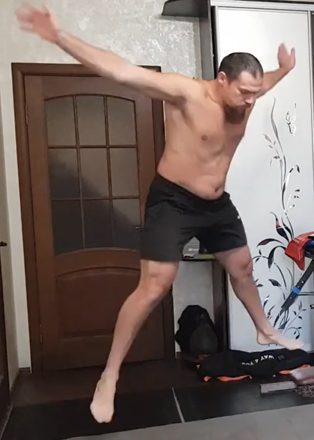
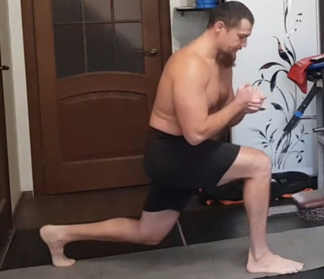
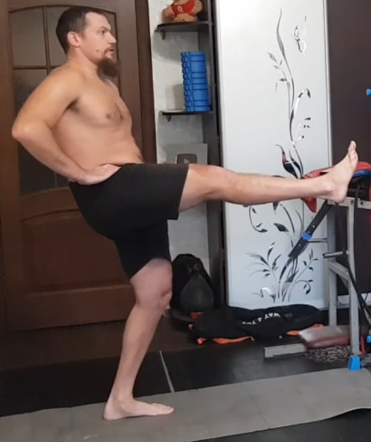
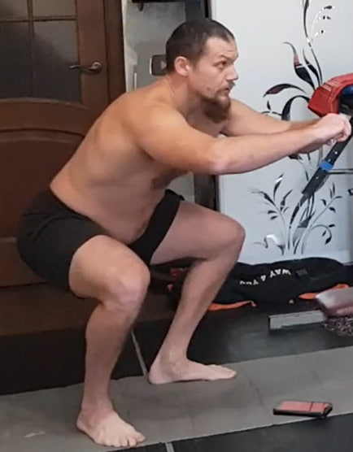

-
1) Zancadas

Da un paso amplio hacia delante y baja de forma controlada a una zancada (rodilla trasera cerca del suelo). Mantén el tronco estable, espalda neutra y la rodilla delantera alineada con el pie.
Dosificación: 10 series por pierna.
-
2) Elevación de pierna al frente (isométrico)

De pie, manos en la cintura y tronco firme. Eleva una pierna recta al frente (pie en flexión) y mantén la posición sin balancearte. Baja con control y repite.
Dosificación: 10 repeticiones por pierna, manteniendo 10 segundos en cada repetición.
-
3) Saltos de estrella
Salta abriendo las piernas hacia los lados mientras subes los brazos por encima de la cabeza. Con otro salto vuelve a la posición inicial. Aterriza suave, ritmo controlado.
Dosificación: 10 repeticiones.
-
4) Sentadillas

Pies separados (ancho cómodo), puntas ligeramente hacia afuera. Baja y sube con control: caderas atrás, pecho abierto, espalda neutra. Rodillas siguen la línea de los pies y talones apoyados.
Dosificación: 10 repeticiones.
-
5) Zancadas con pausa isométrica
Baja a una zancada profunda con el tronco estable. Mantén la rodilla delantera alineada con el pie. En la posición baja mantén la tensión y luego sube con control.
Dosificación: 12 repeticiones por pierna, manteniendo 10 segundos en cada repetición.
-
6) Elevación de pierna al frente (isométrico)
De pie, manos en la cintura. Eleva una pierna recta al frente (pie en flexión) y mantén la posición sin balancearte. Baja con control y repite.
Dosificación: 12 repeticiones por pierna, manteniendo 10 segundos en cada repetición.
-
7) Saltos de estrella

Salta abriendo piernas y elevando brazos por encima de la cabeza; vuelve con otro salto a la posición inicial. Aterriza suave, ritmo controlado.
Dosificación: 12 repeticiones.
-
8) Sentadillas
Pies separados, puntas ligeramente hacia afuera. Baja y sube con control manteniendo la técnica: espalda neutra, pecho abierto, rodillas por la línea de los pies, talones apoyados.
Dosificación: 12 repeticiones.
-
9) Zancadas dinámicas (sin pausa)